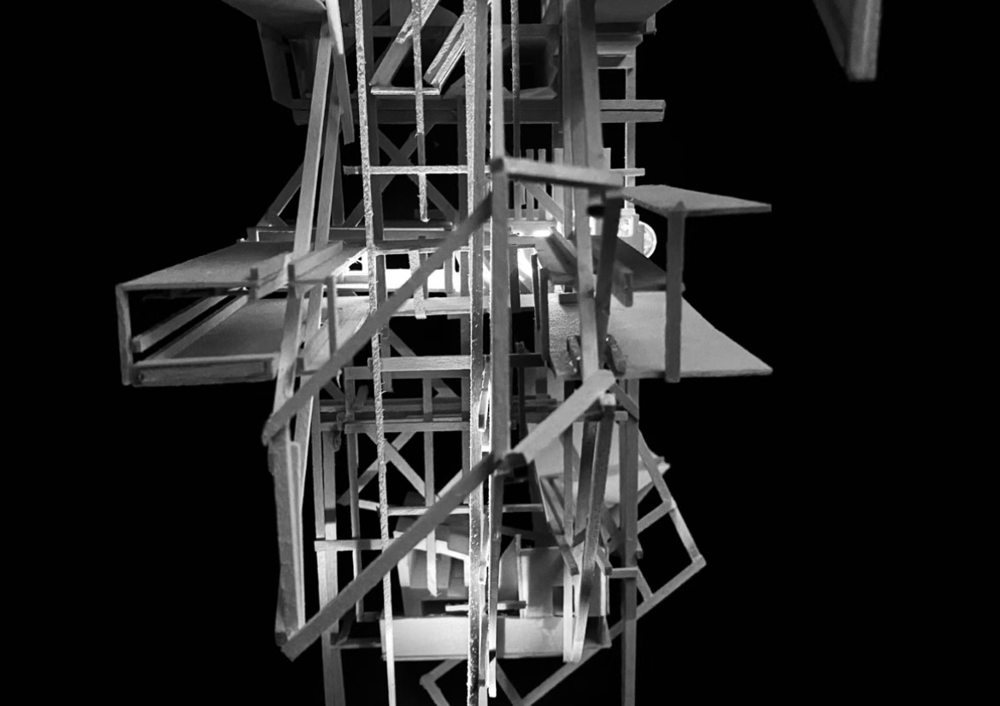
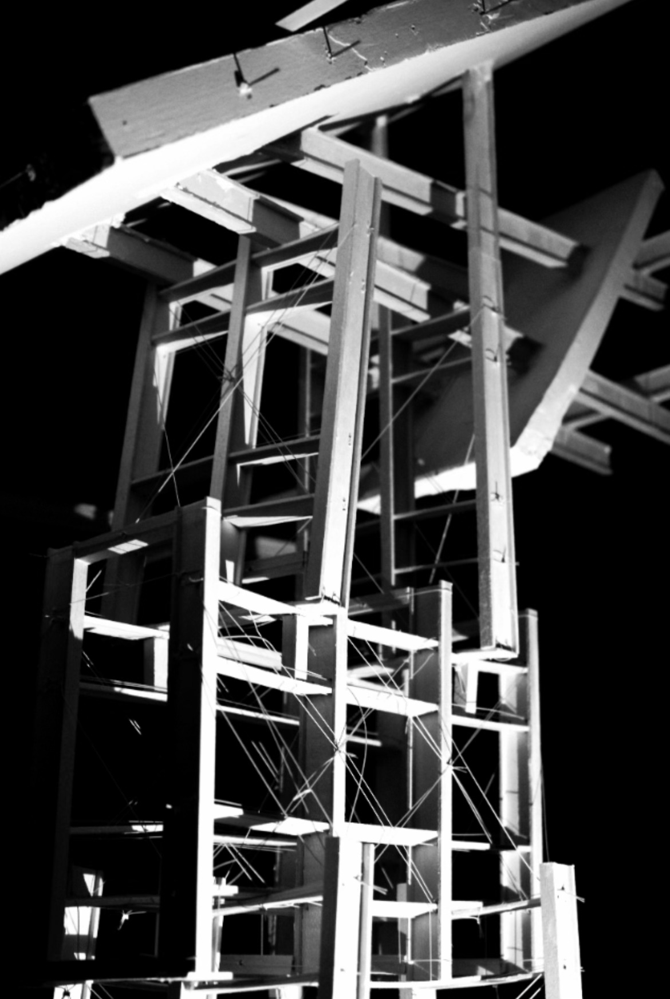

GALLERY
Project X

Project X Design Logic
Project X is a boathouse for the University of Florida Rowing team, designed to house the crew shells, locker rooms, training spaces, administration spaces and a space for the community. The project is centered around a boat ramp at Earl P. Powers park in the east side of Gainesville, Florida. The decision to expand the canal to create a small harbor created an inherent focus on the water. The fundamental logic of the project attempts to continue the radial logic of the harbor.
The spaces being organized radially creates a sense of connectivity of the building as the complimentary views consist of either Newmans lake, or the opposite side of the structure. The connection between the spaces was intended to bring the team closer together and promote a stronger sense of place for the community within the structure.
Training and Locker Rooms
Following the same organization of the building, the training space is intended to be composed of rowing machines that overlook the entire structure to provide an active view. This space takes full advantage of the natural Florida climate with large open air space underneath the roof allowing for ventilation and structure to exist. Furthermore this space is designed to have adjustable curved glass walls that sit along tracks and are able to be stowed to erase the membrane between inside and outside. All of these decisions were made to make the space as dynamic as possible for alternative work outs or accommodating more athletes.
In the background the locker rooms are visible that use the exaggerated overhead structure of the building as a manner of letting natural light into the space. These spaces are seen as the most private within the structure and therefore the circulation paths in front intend to prevent loitering and promote the use of the external path along the side of the structure.


Community Center and Structure
The community center is designed to be a counterpart to the training space with the same logic in place. A similar movable glass wall membrane attempts to grab space, however is able to accommodate larger crowds for different functions. Potentially small classes could be given to the community needing a smaller more focused space, on the contrary, the space could be opened up to fit larger crowds for events such as a regatta.
The roofing system and unique structure was a decision made following the same design logic as the entire structure. The encompassing roof continued the logic of connecting all of the spaces together. Therefore it was the job of the structure to bridge the differences in heights of different programmatic spaces. The exaggeration of structures in places allowed for the structure to be opened up to natural ventilation from the temperate florida climate. The organization of the structure attempts to validate the radial design logic through the creation of a circle using an orthogonal grid. The orthogonal grid can also be seen as a mediator between the overarching geometries of the circle organization within a larger rectangle.
Triquetra
Triquetra Design Logic
Triquetra is a headquarters for the University of Florida Field to Fork Food Pantry that focus on three different values of the food pantry: education, charity and growth. Triquetra is located in the Bartram-Carr Woods on the southeast side of the campus of the University. Externally there were three primary moments of influence around the site that would suggest where occupants would be entering the site from. The two trios of physical and metaphoric inspiration resulted in a space that is seen as an intersection of moments with dedicated sectors to each of the core values.
The design logic gave equal respect to each of the core values, however, fundamentally each of the spaces required a significant degree of difference. It was seen that charity should be the most accessible while the most private while education should be seen as the poster child of the structure. Each of these spaces command an equal degree of spaces but decisions were dictated directly with the intended program of the sector.
Education
Education is seen to be as the loudest space that is thought to include a large ground amphitheater that would pull in passer byers for demonstrations of how to safely grow and prepare food. The importance of education to the Field to Fork foundation is imperative as it is a resource that aims to help students in their current and future situations bring aid and awareness.
Education includes a classroom on the second story walkway and would be seen as the most important space of the structure by a general observer. The significance of education taking the attention of the building allows for the other spaces to recede and become a much more private ordeal.
Charity
The balance between education is found in charity, a private space that intends to swaddle and protect the occupant. The intended occupant of the food pantry should not be put on public display while getting assistance which aligns with the Field to Fork mentality. The foundation donates food to any and all people who ask for it, and the structure for charity does not discriminate either.
There is a strong connection between charity and education, physically being adjacent to one another as well as metaphorically as it is seen as an investment into the future of the individual. Charity is a space designed to have the greatest impact for the occupants that need it the most, designed with the idea of refuge and safety as its core designing principles.
Growth
Growth can be seen as throughout the structure and is not limited to its set sector. Growth should be seen as the connecting principle of the structure, again both physically and metaphorically to the Field to Fork foundation. Physical growth of fauna should be implemented to help grab vertical spaces and add a blur between man made construction and natural construction.
The deeper meaning of growth can be found throughout the structure with the program of the building as well as a means of educating about growth and the delegation of food after being grown. There is intended to be a personal growth of the occupant while interacting with the structure.
Vertical Datum
Vertical Datum Design Logic
Vertical Datum is a multi programmatic structure for the complete development of prosthetics for hockey players. The project emphasizes the vertical association between spaces creating paths and networks between levels and an evolution of programmatic spaces. The surrounding ideas of circulation through the project consist of moving both vertically as well as horizontally to create connections through shifting spaces. Spaces were intended to slip past one another with certain spaces having greater programmatic connection to one another and therefore have their own personal vertical connections. Whereas the entire structure can be seen as a network of circulation, avenues for vertical ascension and descension, with destinations along the stages of development of prosthetics
Programmatic Spaces
The structure builds a base on the beginning screening for research, the space includes a small tunnel with ice intended to be purely used for beginning consultation. Subsequently, the building evolves into development where workshops allow for the prototyping and machining of prosthetics. Continuing upwards is a second sheet of ice that is seen as a practice space intended only for the prothetis and research as a means of troubleshooting and practicing for the final demonstration that the structure is topped with. A final strength and conditioning space for the prothetis that has private connection spaces to the final demonstration space, effectively creating a personal space for the prothetis. The strength and conditioning space is dictated with openness to allow for a wide range of functions dependent on the mobility of the prothetis. The structure and development culminates with the demonstration stage which includes the largest sheet of ice that is intended to showcase the journey of the prosthetic and prothetis.
Vanitas
Vanitas Design Logic
The intention of this project was to try and capture a degenerating space that imposes on the occupant. The primary medium of these spaces were made from wood that had been burned at different intervals to give a dynamic and decrepit feel to the space. The wood was then constructed and supported to leave moments where membranes fail, alluding to the subsequent spaces in the structure. It is important to the design logic that the burned wood would be stripped of the aesthetic indications of being burned in order for the occupant to only recognize the space as degenerative rather than explicitly being burned. The intention was to create a threshold, diagonal pathway and to curate a specific view. The same attributes used to capture the spaces were held consistent attempting to create spaces that make occupants uneasy, in order to frame a view of the comfortable outside.
Falmingo Starship
Flamingo Starship Design Logic
Group Analysis by Alexa Schmidt, Sienna Truskett, Ximena Paz and Jackson Budd
The intention of the project was to analyze the footprints and connections between ground and structure. The goal was to be able to exploit the smallest connection possible as a base in order to hold the heaviest structure possible, that spanned several times past the base. Other intentions were to use tension and compression as the primary means of holding the structure together which was catered to having a large overhead weight, effectively pushing the structure outwards. The tension technique would engage against the pressure and connect opposing sides of the supports to hold tightly to one another.

Flamingo Starship - Light Study

Light Box Design Logic
The goal of the light study was an attempt to experiment with how light can transform spaces. Furthermore, the intention of the light box was to create a moment within the larger structure that begins to bend reality with illusions. The multi mirrored space intentionally used shattered mirrors in order to imitate the visual language of the tension strings holding the structure together. The exterior of the space was intended to be as confining as possible to have a greater shift between reality and illusion in the space. Furthermore the space was also interested in the reflection of light and how a network of mirrors could effectively carry light into paradoxical spaces.